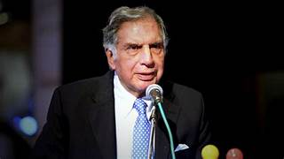

Biography
"I don't believe in taking right decisions. I take decisions and then make them right."
Ratan Naval Tata, born on December 28, 1937, is an Indian industrialist and philanthropist. He is the chairman emeritus of Tata Sons and the former chairman of the Tata Group, India's largest multinational conglomerate. Ratan Tata is recognized for his leadership in transforming Tata Group and for his philanthropic efforts that have impacted education, health, and rural development.
| Attribute | Details |
|---|---|
| Full Name | Ratan Naval Tata |
| Date of Birth | December 28, 1937 |
| Occupation | Industrialist, Philanthropist |
| Known For | Chairman Emeritus of Tata Sons |